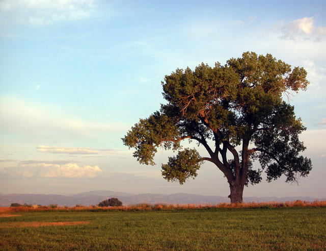

I would drive past this tree every day on my way to teach my Programming ASP.NET class in Fort Collins a couple of weeks ago. On Thursday morning, I planned to drive up to Rocky Mountain National park to take some photos of alpenglow. I had a problem with my alarm clock's user interface and overslept by an hour. When I awoke, I knew it was too late to make it to the mountains, so I went to visit my favorite tree.
If you look carefully at the photo, you'll see the shadow that falls on the trunk of this tree. The shadow is cast by a nearby tree. I wanted to see the rich morning colors of the sun on the trunk of this tree, but to no avail. If I were to return earlier in the year when the sun rises further to the south, I should capture the light that I wanted to see.
This image was made from a tripod on the edge of a highway. I used a medium telephoto (~150mm) and shot wide open (F4.2). The grass at the bottom edge of the photo was effectively at infinity, so I didn't lose any depth of field by shooting wide open.
Posted by John at August 21, 2003 02:54 AM | TrackBackIs this photo exposure bracketed?
Posted by: Jack Herrington at August 21, 2003 11:08 AMThis isn't a particularly contrasty image, so a single exposure was all it took! There's a small amount of sharpening and levels correction in Photoshop on this image, but that's about it.
Posted by: John Lam at August 21, 2003 01:40 PMNice.
Posted by: Jack Herrington at August 23, 2003 12:29 PMWow, that's a really good photo.
Posted by: Tor at August 25, 2003 04:41 PM